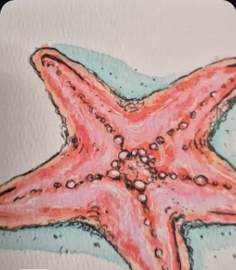
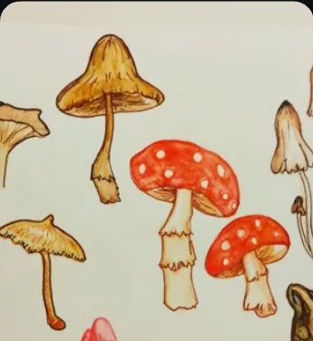

Work in Progress
Show the last thing you made with your hands
Knitting, woodworking, ceramics, sewing, repairs. Post the piece you are working on to a crafts Topic and get it in front of people who make things too.
Crafts and Making on Liora Social is for the middle of the process, not just the finished object. Topics ask for the workbench right now, the half-finished sweater, the glaze test that went wrong. That is where the useful conversation happens.
Makers who run a workshop, a knitting circle or a small studio can open a Project. It holds all the Topics for that craft, a chat for questions, and a page where every contribution from every member is collected together.
Show the last thing you made with your hands
Your workbench, exactly as it is right now
A repair you are proud of
One thing you made more than once, and what changed
From inside the app




The crafts Topics above are examples of what a Topic in this category looks like. The category is live in the app; the exact Topics change as people create them.
Share sketchbook pages, studies and finished pieces to Topics made by other artists.
Open →Post environment designs, character art, devlogs and screenshots to gaming Topics.
Open →Your cat’s eyes, a silhouette from the camera roll, the sweatshirt you always come back to.
Open →Fan art, the scene you keep rewatching, the album on repeat this week.
Open →Liora is a place for everyday people to share and connect around the things they love. iPhone with iOS 15.6 or later, and Android.
Questions, ideas, or want to meet other people on Liora? Join the Liora community on Discord.